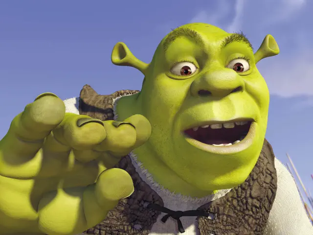
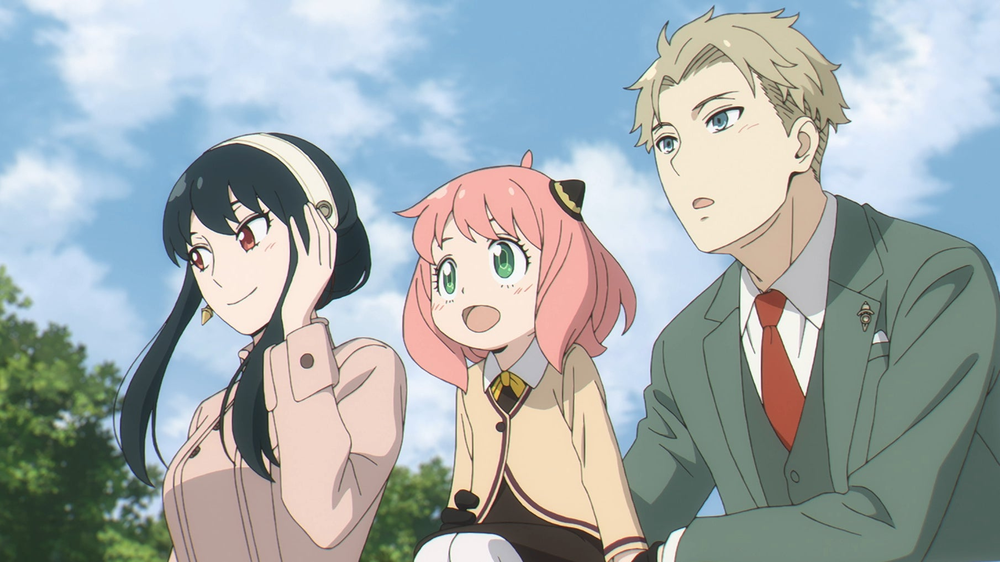

Hi people, My name is Kherlen. My hobby is read fanfiction. I have been read ffic for two years, since 2020. Why i like to read ffictions, because its full of imagination, and it can make me more peaceful. Also, these days i like to watch anime. My cousins watch anime i've always wanted to watch anime with them, but my when that time that was not my interest. But i've just know that my crush likes to watch anime, and on his profile picture, there was Anya from Spy x Family. I have watched my very first anime that named Spy X Family. That was really cute anime. I've asked anime names from my cousins, and i'm continue watch animes. [this shrek is just picture, i just liked that]
 